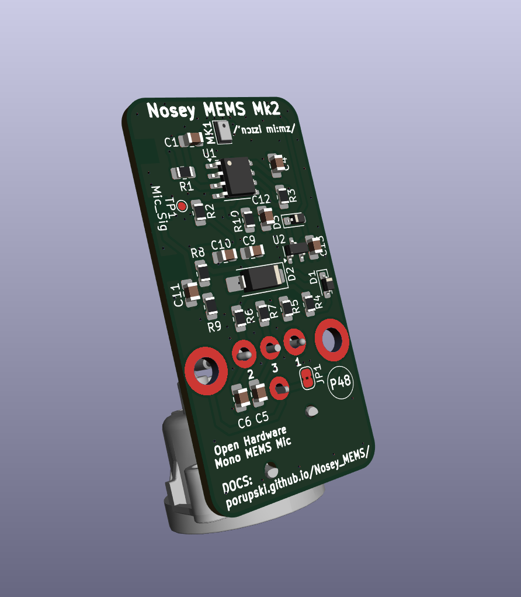
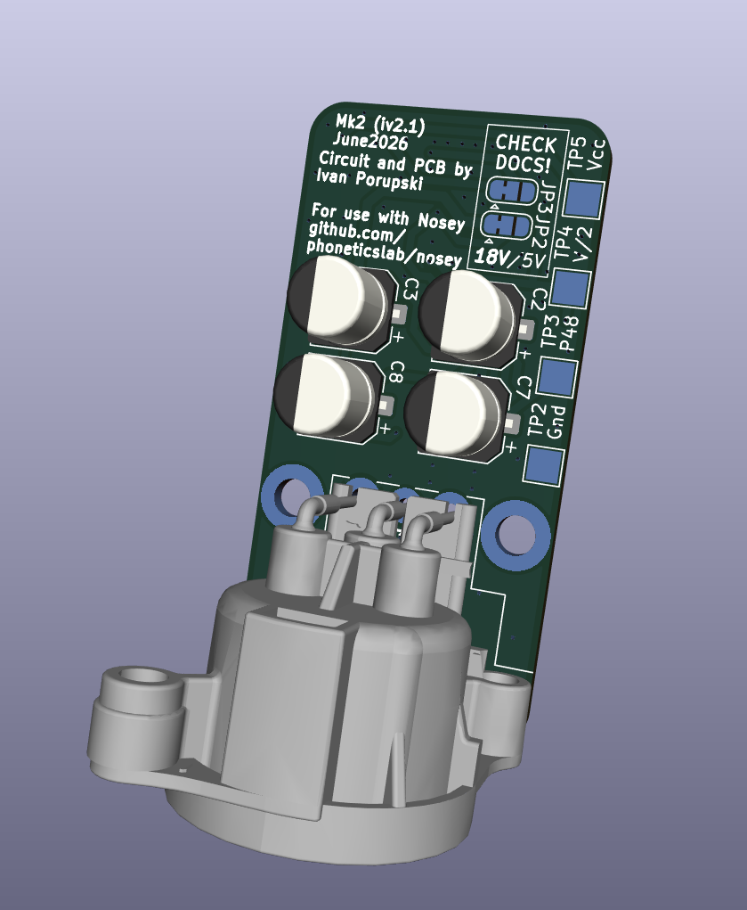

Project Overview
In Active Development
Nosey MEMS Mk2 is a fully open-source, single-channel (mono) MEMS microphone preamp designed for acoustic nasalance measurement. By using two Mk2 boards together — one capturing nasal sounds, the other oral sounds — the device measures the acoustic energy simultaneously emitted from the nose and the mouth during speech. This type of measurement is most commonly studied within the field of Articulatory Phonetics.


Nosey MEMS Mk2 is the open-hardware MEMS successor to Nosey [1], the open-source hardware for acoustic nasalance developed by the Lancaster University Phonetics Lab. Mk2 is built to work with the Nosey 3D-printed handle and baffle: one Mk2 board mounts on the nasal side of the baffle, the other on the oral side.
Why Mono?
The earlier stereo prototype placed both microphones on a single board, with tall electrolytic capacitors sitting between them. That layout compromised the acoustic separation between the nasal and oral channels — exactly the property a nasometer depends on. Mk2 splits the design in two: each board is a self-contained mono channel, so the only thing separating the two microphones is the baffle itself, as intended. Going mono also makes each board smaller, cheaper, and more general-purpose as a standalone balanced MEMS preamp.
Author
Circuit, PCB and webpage design by Ivan Porupski, 2026.
Key Features
- Open-source hardware (KiCad 10.0 schematic, PCB and assembly files)
- Single MEMS (micro-electromechanical systems) microphone using the NA-FFA381-A10-1 sensor
- Frequency response: 100 Hz - 10 kHz* with flat response 20 Hz - 3 kHz**
- Low-noise OPA1652 dual op-amp in a fully balanced differential configuration
- Powered by standard +48V phantom power via a single XLR3 jack
- Compact 25 × 50 mm PCB — roughly half the size of the previous prototype
- Designed to mount in the original Nosey 3D-printed handle and baffle (one board per side)
- Optional 18V / 5V power configuration via jumper settings (default 18V)
- Very low cost: about €20 per fully built board
- * This is a typical MEMS microphone frequency response. Frequency response will always vary from microphone to microphone, even within the same production batch. Calibration is highly suggested.
- ** The NA-FFA381-A10-1 used has a flat frequency response between 20 Hz and 3 kHz, with increased sensitivity at higher frequencies.

Circuit Overview
- The circuit is designed to be simple, low-cost yet effective as a single-channel nasalance instrument.
- The amplifier circuit was inspired by [2], [3], [4].
- It adopts a MEMS microphone instead of a traditional condenser, removing the need for a 1 GΩ input bias resistor — simplifying PCB manufacturing while still achieving respectable audio bandwidth.
- The NA-FFA381-A10-1 is a high-SNR, small-package, single-ended-output, top-port analog MEMS microphone, consisting of a MEMS sensor and a low-noise ASIC.
- A single dual OPA1652 (U1) low-noise op-amp forms the balanced output stage: one half (U1A) is a unity-gain non-inverting buffer for the hot signal, the other half (U1B) is a unity-gain inverting stage for the cold signal. This topology leverages the OPA1652's low current consumption (2 mA per channel) and excellent noise performance (4.5 nV/√Hz @ 1 kHz) to provide a high-fidelity, fully balanced input stage.
- The power supply takes +48V phantom power from the XLR3 jack, current-limited and clamped by an 18V Zener diode (D2, 1SMA4746A) with capacitor filtering to supply the OPA1652. A virtual ground (V/2) is generated with a resistor divider. A PJ71K30SC LDO (U2) then provides a stable 3.3V rail for the MEMS microphone.
- Total current draw is roughly 6 mA per board at 18V (OPA1652 ≈ 5 mA, MEMS ≈ 0.2 mA, LDO ≈ 5 µA, divider ≈ 0.6 mA), with the remainder absorbed by the Zener.
PCB Overview
- Small 25 × 50 mm form factor — a single board carries one complete mono channel.
- Single XLR3 jack carries both the +48V phantom power in and the balanced audio out.
- The metal shielding connects to the PCB via the XLR3's ground connection and via the board's mounting points.
- QR code linking to this site for easy access to documentation.
- Test pads for audio (T_Sig), ground (T_Gnd), the supply rails (T_Vcc1, T_Vcc2) and the virtual ground (T_V/2) for easy verification.
- Baffle mounting holes (H1, H2) to fix the board into the Nosey handle and baffle.
- Optional shorting of Shielding to Ground by jumping JP1.
- Optional switching from 18V power to 5V power setup by jumping JP2 and JP3. Default is 18V.
3D Model Overview
- Mk2 is designed to be used with the Nosey 3D-printed handle and baffle from the Lancaster University Phonetics Lab, rather than a new bespoke housing.
- Two Mk2 boards are mounted on opposite sides of the baffle (one nasal, one oral), using the H1/H2 mounting holes.
- A small printable adapter/bracket to seat the 25 × 50 mm board against the original baffle is in progress.
- Printing settings and any adapter files will be published as they are finalised — see the 3D Printing Guide.
Safety Disclaimer
All work with these electronics is done entirely at your own discretion and risk. It is your sole responsibility to ensure you possess the necessary skills, knowledge, and safety equipment for working with electrical components. The author and any contributors are not liable for any direct, indirect, incidental, or consequential damages.
Downloads
Project files, documentation, and resources will be available here as development progresses.
Available Files
Repo/KiCad_files
- [KiCad 10] Schematic
- [KiCad 10] PCB Layout (unmelted and melted)
- [JLCPCB] PCB gerber production .zip ready for assembly (with melted tracks!)
Repo/REW_files
- [REW] Frequency response curves of the MEMS microphone (Mk1 preliminary test, but same circuit)
Other Resources
- [STL] 3D printable Mk2 baffle adapter (Coming Later)
- Documentation (This page)
Manufacture and Assembly
[Manufacturing Guide →]
After quality control, the GitHub repo provides a .zip file ready for PCB assembly manufacturing (currently tested only with JLCPCB). A complete, fully built Mk2 board costs roughly €20.
Manufacturer Recommendation Disclaimer
The recommended manufacturer is the one the author has used successfully. This is not an endorsement. Please choose a manufacturer based on your own research and needs.
Calibration
[Calibration Guide →]
Since the MEMS microphones come pre-assembled, a calibration test is recommended to ensure each board provides accurate measurements — and, crucially, that the two boards used together are well matched.
Room EQ Wizard (REW) is an open-source software package for acoustical measurements. It is commonly used for measuring the acoustics of a room, frequency response of speakers and microphones, but also (pre)amplifier circuits.
Available for Windows, macOS and Linux.
General steps for calibrating Nosey MEMS Mk2:
- Connect each Nosey MEMS Mk2 board to an audio interface (pre-calibrated with REW, Phantom Power +48V on) and verify the microphone is working.
- Mount the board about 5 cm from a loudspeaker (ideally a calibrated studio monitor).
- Run a REW frequency sweep for the microphone.
- Repeat for the second board and compare the frequency response curves to verify the two boards match sufficiently for your research purposes.
- Optional: use these response curves to filter your raw audio before nasalance calculations.
3D Printing
[3D Printing Guide →]
Mk2 reuses the original Nosey 3D-printed handle and baffle. A small printable adapter to seat each Mk2 board against the baffle is in development.
As the adapter develops, printing settings will be published here, along with any other notes and/or suggestions.
PETG is recommended for durability and better water resistance.
References
- [1] Dewhurst, M., Collins, J., Lo, J. J., Alderton, R., & Kirkham, S. (2025). Nosey: Open-source hardware for acoustic nasalance. arXiv preprint arXiv:2505.23339. Nosey InterSpeech2025 Paper [PDF]
- [2] Self, D. (2023). Small signal audio design. Focal Press.
- [3] DJJules' Instructable True Condenser OPA Mics
- [4] Texas Instruments. (2013). An applications guide for op amps (Application Report SNOA621C). Texas Instruments Link to PDF
- [5] STMicroelectronics. (2017). Tutorial for MEMS microphones (Application Note AN4426). STMicroelectronics. Link to PDF
- [6] Infineon Technologies. (2018). MEMS microphone mechanical & acoustical implementation (Application Note AN557). Infineon Technologies. Link to PDF
A lot about microphone circuits can be found on groups.io/g/MicBuilders/.
Legacy (Mk1)
The original stereo Nosey MEMS (Mk1) documentation is preserved for reference. Mk1 placed both microphones on a single board; Mk2 supersedes it with the mono, two-board approach described above.